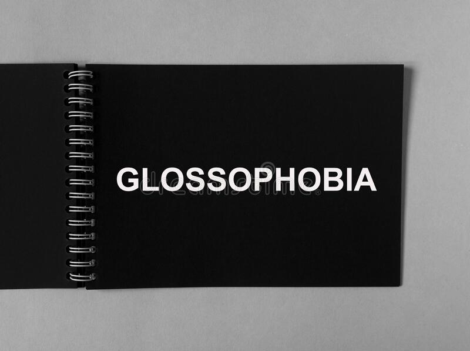

HELLO PEOPLE!
YOU MAY NOT FIND ANYTHING IMPORTANT HERE, BUT DO READ IT!
First of all,
a huge shoutout to all the potterheads out there..
So, now we'll talk about How to overcome Glossophobia. (GLOSSOPHOBIA= Fear of public speaking.)
- In order to get rid of your glossophobia, here are few tips.
Although, i won't guarantee y'all that these tips will be useful everytime.
But i will recommend you to try them at least once!
- Stand straight and take a deep breath before speaking.
- Observe your audience and try to find a familiar face,
actually more than one face(we don't want to make it look weird). and focus on them while speaking.
- Think about what you are going to speak, and focus on your words only.
- Don't be negative & just think positively.
=> Find out more about your Glossophobia on:
Click here!

That's it you're done!!
All the best.
:) <3